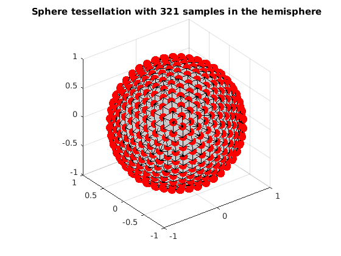
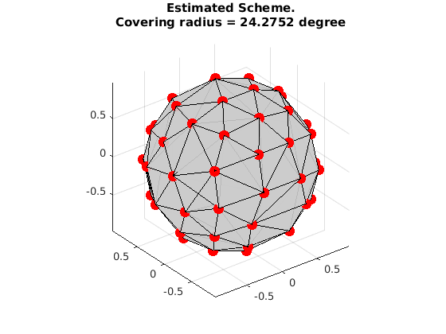

Uniformly select a single subset from a given set
This is a demo to uniformly separate a subset from a given set by using Mixed Integer Linear Programming (MILP)
Reference:
1. "Single- and Multiple-Shell Uniform Sampling Schemes for Diffusion MRI Using Spherical Codes", Jian Cheng, Dinggang Shen, Pew-Thian Yap, Peter J. Basser, IEEE Transactions on Medical Imaging, 2017.
2. "Designing Single- and Multiple-Shell Sampling Schemes for Diffusion MRI Using Spherical Code", Jian Cheng, Dinggang Shen, Pew-Thian Yap, MICCAI 2014.
Copyright (c) 2013, Jian Cheng (jian.cheng.1983@gmail.com)
Contents
read sphere tessellation with 321 samples in the hemisphere
grad_t4 = ReadDirections([getenv('HOME'), '/.dmritool/Data/Tessellation/directions_t4.txt']); VisualizeMultiShellScheme(grad_t4); title(['Sphere tessellation with 321 samples in the hemisphere']);
extract 30 samples from grad_t4 using MILP
clear params grbParams params.numSamples = 30; % set a lower bound, it can be 0 or covering radius from an existing scheme params.lbCost = 0.24; % grb parameters % MIPFocus 1 seems better grbParams.MIPFocus=1; % set time limit as 10 minutes or more grbParams.TimeLimit=600; % print verbose output from gurobi grbParams.OutputFlag=true; % grbParams.OutputFlag=false; % params.ModelFile='model.mps'; % run [grad,grb] = OptimalSamplingSingleSubset(grad_t4, params, grbParams);
MIPFocus = 1
Academic license - for non-commercial use only
Optimize a model with 5896 rows, 322 columns and 18006 nonzeros
Variable types: 1 continuous, 321 integer (321 binary)
Coefficient statistics:
Matrix range [1e+00, 1e+00]
Objective range [1e+00, 1e+00]
Bounds range [2e-01, 1e+00]
RHS range [3e+00, 3e+01]
Found heuristic solution: objective 0.25999
Presolve time: 0.01s
Presolved: 5896 rows, 322 columns, 18006 nonzeros
Variable types: 1 continuous, 321 integer (321 binary)
Presolved: 322 rows, 6218 columns, 18328 nonzeros
Presolve removed 322 rows and 6218 columns
Root relaxation: objective 4.925213e-01, 137 iterations, 0.01 seconds
Nodes | Current Node | Objective Bounds | Work
Expl Unexpl | Obj Depth IntInf | Incumbent BestBd Gap | It/Node Time
0 0 0.49252 0 54 0.25999 0.49252 89.4% - 0s
H 0 0 0.2657885 0.49252 85.3% - 0s
H 0 0 0.2696609 0.49252 82.6% - 0s
H 0 0 0.2767874 0.49252 77.9% - 0s
H 0 0 0.2776993 0.49252 77.4% - 0s
H 0 0 0.2803222 0.49252 75.7% - 0s
0 0 0.49252 0 64 0.28032 0.49252 75.7% - 0s
H 0 0 0.2986800 0.49252 64.9% - 0s
0 0 0.49252 0 63 0.29868 0.49252 64.9% - 0s
0 0 0.49252 0 65 0.29868 0.49252 64.9% - 0s
H 0 0 0.3226415 0.49252 52.7% - 0s
0 0 0.49252 0 68 0.32264 0.49252 52.7% - 0s
0 0 0.49252 0 69 0.32264 0.49252 52.7% - 0s
H 0 0 0.3226419 0.49252 52.7% - 0s
0 0 0.49252 0 60 0.32264 0.49252 52.7% - 0s
0 0 0.49252 0 60 0.32264 0.49252 52.7% - 0s
0 0 0.49252 0 60 0.32264 0.49252 52.7% - 0s
0 0 0.49252 0 40 0.32264 0.49252 52.7% - 0s
H 0 0 0.3234399 0.49252 52.3% - 0s
0 2 0.49252 0 40 0.32344 0.49252 52.3% - 0s
H 2 4 0.3828035 0.49252 28.7% 334 0s
H 3 8 0.3839959 0.49252 28.3% 236 0s
H 147 128 0.3850299 0.49252 27.9% 15.6 1s
H 174 163 0.3871869 0.49252 27.2% 14.0 1s
H 301 302 0.3915867 0.49252 25.8% 9.6 1s
H 371 370 0.3937169 0.49252 25.1% 8.5 1s
H 399 398 0.3967654 0.49252 24.1% 8.1 1s
H 686 679 0.3967658 0.49252 24.1% 7.4 1s
H 713 681 0.4028492 0.49252 22.3% 7.4 2s
H 800 751 0.4028495 0.49252 22.3% 7.4 2s
H 804 775 0.4028499 0.49252 22.3% 7.5 2s
H 1229 1058 0.4038586 0.49252 22.0% 14.9 4s
H 1230 1010 0.4059673 0.49252 21.3% 15.0 4s
H 1288 979 0.4063142 0.49252 21.2% 16.0 4s
H 1389 1003 0.4071825 0.49252 21.0% 15.5 4s
H 1390 994 0.4110652 0.49252 19.8% 15.5 5s
H 1460 1000 0.4110656 0.49252 19.8% 15.8 5s
H 1520 998 0.4114454 0.49252 19.7% 15.3 5s
H 1624 1035 0.4121936 0.49252 19.5% 15.6 5s
H 1738 1075 0.4121939 0.49252 19.5% 15.2 5s
H 2022 1216 0.4137738 0.49252 19.0% 15.4 6s
H 2219 1259 0.4144714 0.49252 18.8% 16.2 6s
H 2300 1256 0.4144718 0.49252 18.8% 16.4 7s
H 2397 1276 0.4144720 0.49252 18.8% 16.8 7s
H 2504 1273 0.4151806 0.49252 18.6% 17.0 7s
H 2581 1333 0.4151808 0.49252 18.6% 17.1 7s
H 2653 1402 0.4151808 0.49252 18.6% 17.0 7s
H 2790 1499 0.4151811 0.49252 18.6% 17.1 8s
2832 1505 cutoff 95 0.41518 0.49252 18.6% 17.2 10s
3258 1735 0.47124 54 54 0.41518 0.49252 18.6% 17.9 15s
3496 1876 cutoff 69 0.41518 0.49252 18.6% 17.7 20s
4098 2199 0.48580 29 68 0.41518 0.49252 18.6% 17.9 27s
5384 2953 0.49252 59 52 0.41518 0.49252 18.6% 18.2 30s
6380 3626 cutoff 70 0.41518 0.49252 18.6% 18.7 35s
7803 4397 0.45991 79 44 0.41518 0.49252 18.6% 18.9 42s
9109 5013 0.49252 46 48 0.41518 0.49252 18.6% 18.9 47s
H10244 5584 0.4151813 0.49252 18.6% 18.9 49s
10340 5593 0.48258 56 74 0.41518 0.49252 18.6% 18.9 51s
11532 6236 0.46797 37 56 0.41518 0.49252 18.6% 18.8 56s
H11666 6013 0.4236827 0.49252 16.2% 18.8 56s
H12697 6444 0.4236830 0.49252 16.2% 19.1 58s
12736 6449 0.48380 28 67 0.42368 0.49252 16.2% 19.2 60s
13669 6841 0.49107 71 73 0.42368 0.49252 16.2% 19.1 67s
15278 7612 0.49186 56 85 0.42368 0.49252 16.2% 19.1 73s
15753 7937 0.47951 68 72 0.42368 0.49252 16.2% 19.1 79s
15973 8013 0.46106 69 52 0.42368 0.49252 16.2% 19.1 81s
17849 9070 0.47373 52 55 0.42368 0.49252 16.2% 19.1 87s
17861 9062 cutoff 53 0.42368 0.49252 16.2% 19.1 94s
18118 9173 cutoff 54 0.42368 0.49252 16.2% 19.1 98s
18696 9482 cutoff 49 0.42368 0.49252 16.2% 19.1 106s
19329 9798 0.47681 51 62 0.42368 0.49252 16.2% 19.2 112s
19721 9945 0.48710 51 73 0.42368 0.49252 16.2% 19.2 118s
20287 10260 0.48515 58 63 0.42368 0.49252 16.2% 19.2 124s
20295 10224 0.48022 59 63 0.42368 0.49252 16.2% 19.2 128s
21326 10667 0.45795 64 54 0.42368 0.49252 16.2% 19.1 137s
24708 12216 0.49252 60 49 0.42368 0.49252 16.2% 19.1 143s
25458 12495 0.48685 63 67 0.42368 0.49252 16.2% 19.0 149s
26144 12767 0.47506 62 58 0.42368 0.49252 16.2% 19.0 155s
29375 14089 0.49252 56 50 0.42368 0.49252 16.2% 19.0 162s
30141 14423 0.49252 57 50 0.42368 0.49252 16.2% 19.0 168s
31148 14925 0.49222 42 87 0.42368 0.49252 16.2% 19.0 174s
31660 15150 0.44796 66 47 0.42368 0.49252 16.2% 19.1 181s
32607 15698 0.49252 45 55 0.42368 0.49252 16.2% 19.1 190s
36814 17647 0.42718 51 41 0.42368 0.49252 16.2% 19.2 198s
37753 18037 0.46756 68 59 0.42368 0.49252 16.2% 19.2 206s
40344 19289 0.49147 67 71 0.42368 0.49252 16.2% 19.2 213s
41454 19871 cutoff 51 0.42368 0.49252 16.2% 19.3 220s
42033 20138 0.47968 38 61 0.42368 0.49252 16.2% 19.3 228s
42287 20171 0.48923 38 74 0.42368 0.49252 16.2% 19.3 230s
45010 21618 0.47282 98 60 0.42368 0.49252 16.2% 19.4 236s
45216 21701 0.47198 99 58 0.42368 0.49252 16.2% 19.4 242s
45503 21758 0.46995 100 57 0.42368 0.49252 16.2% 19.4 245s
48430 23377 0.46780 49 56 0.42368 0.49252 16.2% 19.5 257s
50699 24370 0.48754 45 71 0.42368 0.49252 16.2% 19.6 264s
51008 24415 0.48343 46 66 0.42368 0.49252 16.2% 19.6 265s
53154 25418 0.48675 48 68 0.42368 0.49252 16.2% 19.6 270s
54030 25834 0.48482 64 70 0.42368 0.49252 16.2% 19.6 279s
54038 25774 0.48345 65 69 0.42368 0.49252 16.2% 19.6 280s
56414 26947 0.49252 54 54 0.42368 0.49252 16.2% 19.6 290s
56708 27143 0.49252 55 52 0.42368 0.49252 16.2% 19.6 296s
59425 28337 cutoff 127 0.42368 0.49252 16.2% 19.6 305s
61386 29104 cutoff 44 0.42368 0.49252 16.2% 19.6 311s
61753 29272 cutoff 64 0.42368 0.49252 16.2% 19.6 318s
62408 29508 0.48562 50 73 0.42368 0.49252 16.2% 19.7 320s
64443 30511 cutoff 48 0.42368 0.49252 16.2% 19.7 327s
66159 31143 0.48072 41 70 0.42368 0.49252 16.2% 19.6 333s
66353 31160 0.47913 42 67 0.42368 0.49252 16.2% 19.6 335s
68252 32113 cutoff 62 0.42368 0.49252 16.2% 19.6 341s
68433 32184 cutoff 63 0.42368 0.49252 16.2% 19.6 345s
70460 33282 cutoff 58 0.42368 0.49252 16.2% 19.7 354s
70471 33238 cutoff 60 0.42368 0.49252 16.2% 19.7 355s
71783 33979 cutoff 114 0.42368 0.49252 16.2% 19.7 362s
73317 34784 0.45928 66 49 0.42368 0.49252 16.2% 19.8 368s
73327 34743 cutoff 67 0.42368 0.49252 16.2% 19.8 370s
74884 35537 cutoff 49 0.42368 0.49252 16.2% 19.8 375s
76752 36483 0.46750 69 55 0.42368 0.49252 16.2% 19.9 380s
78201 37190 0.49252 71 56 0.42368 0.49252 16.2% 19.9 385s
79956 38392 0.48993 90 84 0.42368 0.49252 16.2% 20.0 390s
80232 38505 0.47715 98 59 0.42368 0.49252 16.2% 20.0 395s
81974 39268 0.49252 82 59 0.42368 0.49252 16.2% 20.0 402s
83367 39820 0.49252 85 59 0.42368 0.49252 16.2% 20.0 410s
83954 40098 0.49252 86 57 0.42368 0.49252 16.2% 20.0 418s
86216 41385 0.49139 66 77 0.42368 0.49252 16.2% 20.1 426s
87852 42208 0.46378 96 53 0.42368 0.49252 16.2% 20.1 433s
88829 42779 0.48101 63 66 0.42368 0.49252 16.2% 20.1 439s
89088 42916 0.44489 77 43 0.42368 0.49252 16.2% 20.1 440s
90863 43946 0.46355 73 57 0.42368 0.49252 16.2% 20.1 447s
92637 44820 0.49082 61 82 0.42368 0.49252 16.2% 20.1 452s
94419 45742 0.49252 52 52 0.42368 0.49252 16.2% 20.1 458s
94499 45774 0.48621 52 67 0.42368 0.49252 16.2% 20.1 460s
95918 46556 cutoff 69 0.42368 0.49252 16.2% 20.1 467s
97568 47351 0.46381 84 61 0.42368 0.49252 16.2% 20.1 471s
H97573 47353 0.4236833 0.49252 16.2% 20.1 471s
98829 47986 0.49218 63 86 0.42368 0.49252 16.2% 20.1 475s
99084 48108 0.49218 64 86 0.42368 0.49252 16.2% 20.1 481s
100297 48780 0.49055 58 87 0.42368 0.49252 16.2% 20.2 486s
100616 48936 0.47500 61 55 0.42368 0.49252 16.2% 20.2 493s
100755 49003 0.44227 79 41 0.42368 0.49252 16.2% 20.2 496s
101005 49187 0.47496 84 51 0.42368 0.49252 16.2% 20.2 502s
101014 49174 0.48153 84 59 0.42368 0.49252 16.2% 20.2 505s
101719 49518 0.48475 61 77 0.42368 0.49252 16.2% 20.2 513s
101731 49490 0.48475 62 77 0.42368 0.49252 16.2% 20.2 517s
102265 49792 0.42934 63 37 0.42368 0.49252 16.2% 20.2 521s
102405 49831 0.42934 64 37 0.42368 0.49252 16.2% 20.2 528s
102950 50134 0.45669 64 51 0.42368 0.49252 16.2% 20.2 533s
103000 50137 cutoff 65 0.42368 0.49252 16.2% 20.2 535s
103795 50495 0.48003 65 64 0.42368 0.49252 16.2% 20.2 541s
106395 51971 0.48428 42 67 0.42368 0.49252 16.2% 20.2 545s
106759 52169 0.47916 43 59 0.42368 0.49252 16.2% 20.2 552s
109271 53629 0.48126 88 67 0.42368 0.49252 16.2% 20.3 559s
109279 53634 0.46509 86 57 0.42368 0.49252 16.2% 20.3 564s
109504 53731 0.44877 105 40 0.42368 0.49252 16.2% 20.3 566s
111642 54994 0.49106 79 77 0.42368 0.49252 16.2% 20.3 570s
112075 55233 0.42718 92 40 0.42368 0.49252 16.2% 20.3 575s
112830 55587 0.45297 61 54 0.42368 0.49252 16.2% 20.3 581s
115272 56865 0.47616 109 56 0.42368 0.49252 16.2% 20.4 586s
115978 57121 cutoff 58 0.42368 0.49252 16.2% 20.4 592s
116211 57234 0.46766 59 50 0.42368 0.49252 16.2% 20.4 600s
Cutting planes:
Gomory: 7
Clique: 236
MIR: 1
Flow cover: 80
Zero half: 21
Explored 116219 nodes (2368534 simplex iterations) in 600.01 seconds
Thread count was 8 (of 8 available processors)
Solution count 10: 0.423683 0.423683 0.423683 ... 0.414472
Time limit reached
Best objective 4.236832835444e-01, best bound 4.925212544099e-01, gap 16.2475%
visualize the result
VisualizeMultiShellScheme(grad);
title({'Estimated Scheme.', ['Covering radius = ', num2str(CoveringRadius(grad)*180/pi), ' degree']});
